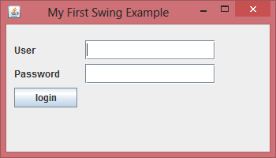

Swing is a part of Java Foundation classes (JFC), the other parts of JFC are java2D and Abstract window toolkit (AWT). AWT, Swing & Java 2D are used for building graphical user interfaces (GUIs) in java. In this tutorial we will mainly discuss about Swing API which is used for building GUIs on the top of AWT and are much more light-weight compared to AWT.
A Simple swing example
In the below example we would be using several swing components that you have not learnt so far in this tutorial. We will be discussing each and everything in detail in the coming swing tutorials.
The below swing program would create a login screen.
import javax.swing.JButton;
import javax.swing.JFrame;
import javax.swing.JLabel;
import javax.swing.JPanel;
import javax.swing.JPasswordField;
import javax.swing.JTextField;
public class SwingFirstExample {
public static void main(String[] args) {
// Creating instance of JFrame
JFrame frame = new JFrame("My First Swing Example");
// Setting the width and height of frame
frame.setSize(350, 200);
frame.setDefaultCloseOperation(JFrame.EXIT_ON_CLOSE);
/* Creating panel. This is same as a div tag in HTML
* We can create several panels and add them to specific
* positions in a JFrame. Inside panels we can add text
* fields, buttons and other components.
*/
JPanel panel = new JPanel();
// adding panel to frame
frame.add(panel);
/* calling user defined method for adding components
* to the panel.
*/
placeComponents(panel);
// Setting the frame visibility to true
frame.setVisible(true);
}
private static void placeComponents(JPanel panel) {
/* We will discuss about layouts in the later sections
* of this tutorial. For now we are setting the layout
* to null
*/
panel.setLayout(null);
// Creating JLabel
JLabel userLabel = new JLabel("User");
/* This method specifies the location and size
* of component. setBounds(x, y, width, height)
* here (x,y) are cordinates from the top left
* corner and remaining two arguments are the width
* and height of the component.
*/
userLabel.setBounds(10,20,80,25);
panel.add(userLabel);
/* Creating text field where user is supposed to
* enter user name.
*/
JTextField userText = new JTextField(20);
userText.setBounds(100,20,165,25);
panel.add(userText);
// Same process for password label and text field.
JLabel passwordLabel = new JLabel("Password");
passwordLabel.setBounds(10,50,80,25);
panel.add(passwordLabel);
/*This is similar to text field but it hides the user
* entered data and displays dots instead to protect
* the password like we normally see on login screens.
*/
JPasswordField passwordText = new JPasswordField(20);
passwordText.setBounds(100,50,165,25);
panel.add(passwordText);
// Creating login button
JButton loginButton = new JButton("login");
loginButton.setBounds(10, 80, 80, 25);
panel.add(loginButton);
}
}
Output:

In the above example we have used several components. Let’s discuss a bit about them first then we will discuss them in detail in the next tutorials.
JFrame – A frame is an instance of JFrame. Frame is a window that can have title, border, menu, buttons, text fields and several other components. A Swing application must have a frame to have the components added to it.
JPanel – A panel is an instance of JPanel. A frame can have more than one panels and each panel can have several components. You can also call them parts of Frame. Panels are useful for grouping components and placing them to appropriate locations in a frame.
JLabel – A label is an instance of JLabel class. A label is unselectable text and images. If you want to display a string or an image on a frame, you can do so by using labels. In the above example we wanted to display texts “User” & “Password” just before the text fields , we did this by creating and adding labels to the appropriate positions.
JTextField – Used for capturing user inputs, these are the text boxes where user enters the data.
JPasswordField – Similar to text fields but the entered data gets hidden and displayed as dots on GUI.
JButton – A button is an instance of JButton class. In the above example we have a button “Login”.
Can you please help me understand how to capture the user name and password to use in another class?